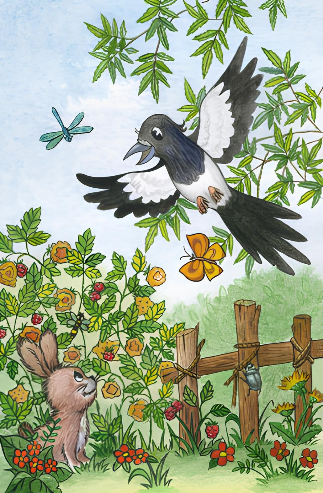

Всему свое время
Николай Сладков
Надоела зима Сороке. Вот бы лето сейчас!
– Эй, Свиристель, ты бы лету обрадовался?
– Спрашиваешь ещё? – Свиристель отвечает. – Перебиваюсь с рябины на калину, оскомина на языке!
А Сорока уже Косача спрашивает. Жалуется и Косач:
– Сплю в снегу, на обед одна каша берёзовая! Брови красные – отморозил!
Сорока к Медведю стучится: как, мол, зиму зимуешь?
– Так себе! – Миша ворчит. – С боку на бок. На правом боку лежу – малина мерещится, на левом – мёд липовый.
– Понятно! – Сорока стрекочет. – Всем зима надоела! Чтоб ты, зима, провалилась!
И зима провалилась…
Ахнуть не успели – лето вокруг! Теплынь, цветы, листья. Веселись, лесной народ!
А лесной народ закручинился…
– Растерялся я что-то, Сорока! – Свиристель говорит. – В какое ты меня поставила положение? Я к вам с севера по рябину примчался, а у вас листья одни. С другой стороны, я летом на севере должен быть, а я тут торчу! Голова кру́гом. И есть нечего…
– Натворила Сорока дел! – шипит сердито Косач. – Что за чушь? Куда весну подевала? Весной я песни пою и танцы танцую. Самое развесёлое времечко! А летом только линять, перья терять. Что за чушь?
– Так вы же сами о лете мечтали! – вскрикивала Сорока.
– Мало ли что! – Медведь говорит. – Мечтали мы о лете с мёдом да с малиной. А где они, если ты через весну перепрыгнула? Ни малина, ни липа зацвести не успели, – стало быть, ни малины, ни мёда липового не будет! Поворачивайся хвостом – я его тебе сейчас выщиплю!
Ух как рассердилась Сорока! Вильнула, подпрыгнула, на ёлку взлетела и крикнула:
– Провалитесь вы вместе с летом!
И провалилось нежданное лето. И снова в лесу зима. Снова Свиристель рябину клюёт… Но терпят. Настоящую весну ждут.